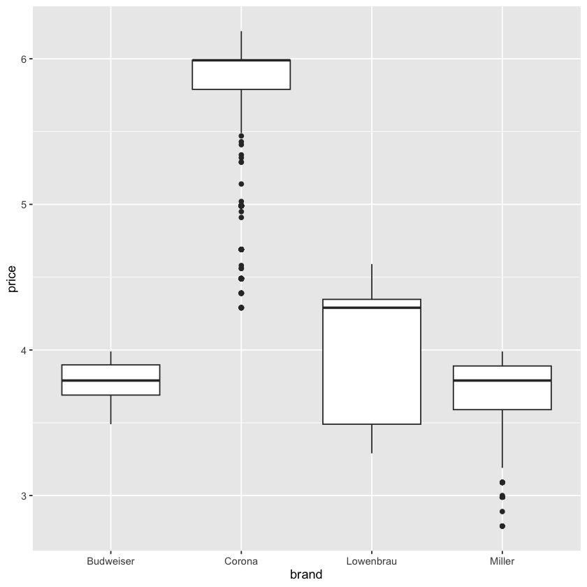
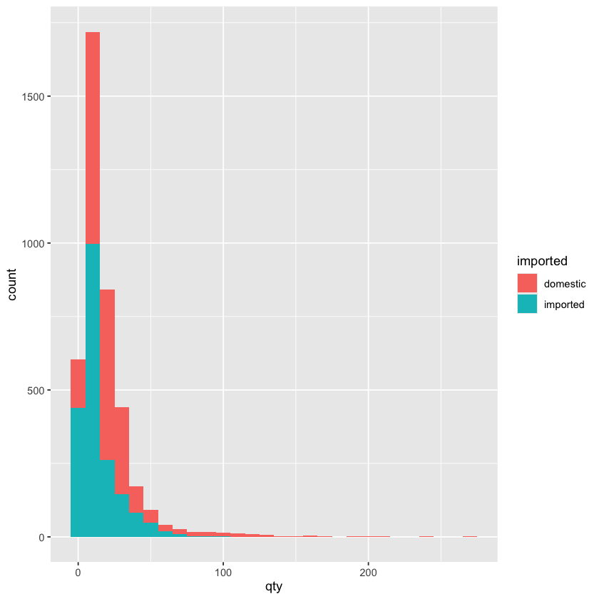
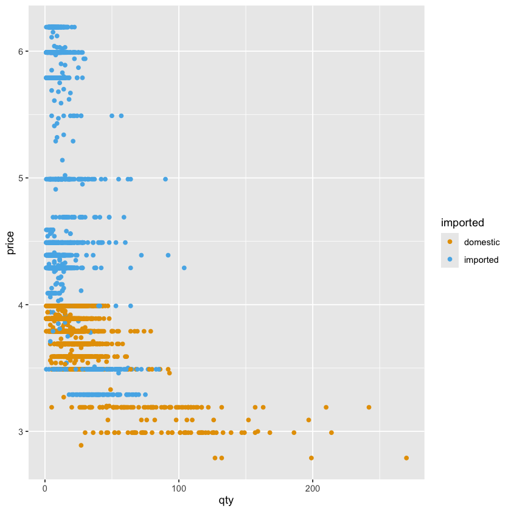
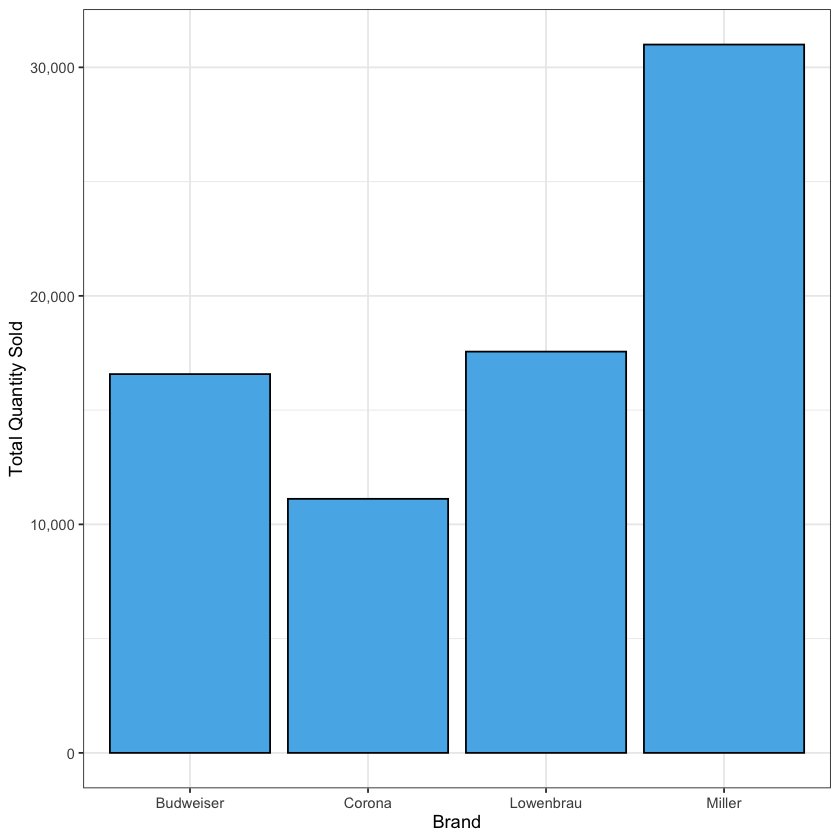
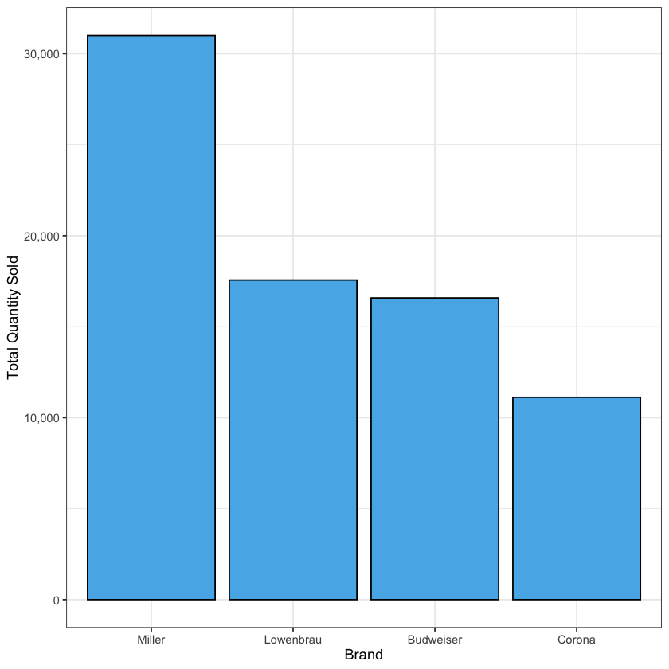
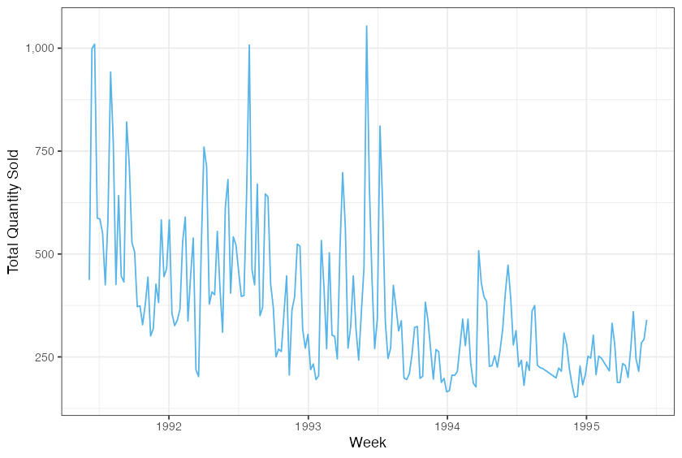
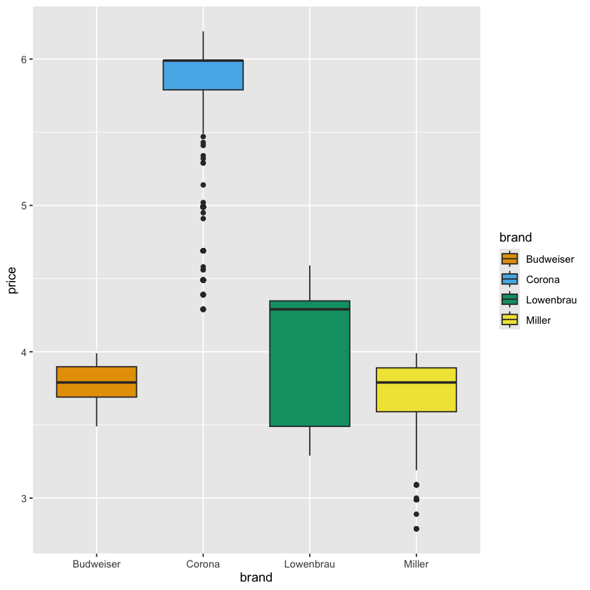
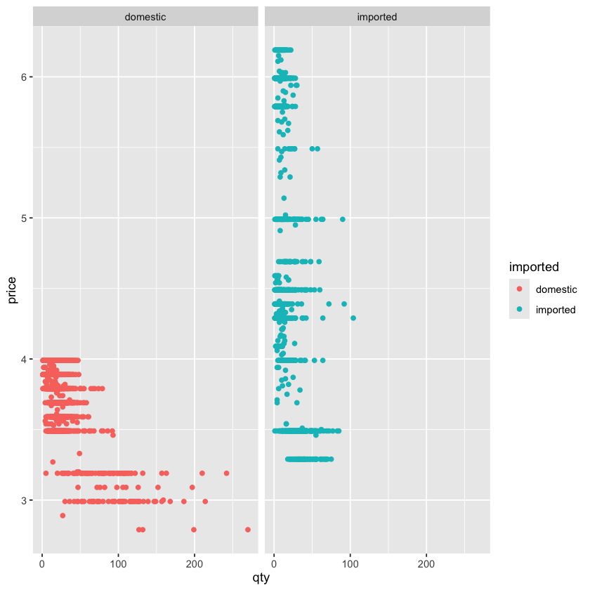

Class 3 知识点总结¶
Class 3 是 ggplot2 作图，这一节的重点有：
- 可视化的重要性：为什么要先画图，再做分析
- 使用
ggplot2作常见的图像类型 - 使用
ggplot2中常见的图像修饰 - 常用的绘图技巧
1. 可视化的重要性¶
为什么要先画图，再做分析：汇总统计量相同的数据，画出来可能完全不同
-
课上我们见过了 Datasaurus Dozen 案例：
- 好几组数据的均值、标准差、相关系数几乎一样
- 但画成散点图后，形状天差地别（甚至画成一只恐龙）
-
说明图像可以直观高效地展示分布的形状、异常值、聚集的位置
- 这些是汇总统计量无法揭示的数据特征
- 盯着原始数据更不可能发现这些特征
-
因此可视化是分析的第一步：在做更深入的分析之前，先看清数据长什么样
2. ggplot2 绘制常见图像类型¶
(1) ggplot2 的基本语法¶
ggplot2 的绘图思想是图层叠加，基本语法是：
ggplot(data = ...) +
geom_*(aes(x = ..., y = ..., color = ..., fill = ...))
- ggplot(data = ...) 创建画布，指定数据
-
geom_*() 决定画什么图形，并映射数据到图形属性，这里
*代表具体的图形类型，如：geom_point()就是散点图geom_line()就是折线图geom_bar()就是柱状图- 等等，我们后面总结
-
aes() 用于映射数据到图形属性，如 x 轴的延伸依据、y 轴的延伸依据、边框颜色用什么区分、填充颜色用什么区分
(2) aes() 的作用¶
aes() 的作用是：把数据集中的变量映射到图形的视觉属性：
x：x 轴按照哪个变量绘制y：y 轴按照哪个变量绘制color：根据哪个变量来区分边框颜色fill：根据哪个变量来区分填充颜色
注意，aes() 又可以放到 geom_*() 里，也可以放到 ggplot() 里：
- 放在
ggplot()里：所有图层默认都使用这个映射
# 散点和拟合线都按班级分组、分颜色：映射一致，写在 ggplot() 里
ggplot(students, aes(x = score_chinese, y = score_math, color = class)) +
geom_point() +
geom_smooth(method = "lm")
- 放在
geom_*()里：只对当前图层使用这个映射
# 散点按班级上色，但拟合线只想要一条整体趋势：
# x、y 是公共的，color 只属于 geom_point()
ggplot(students, aes(x = score_chinese, y = score_math)) +
geom_point(aes(color = class)) +
geom_smooth(method = "lm")
映射与固定设置的区别
- 颜色（color 与 fill），如果放到
aes()里，就是映射，表示某变量用颜色区分
# 映射：颜色随 imported 这个变量变化，写在 aes() 里
geom_point(aes(x = qty, y = price, color = imported))
- 如果放到
aes()外面，就是固定设置，对所有数据都一样
# 固定设置：所有点都是同一种颜色，写在 aes() 外面
geom_point(aes(x = qty, y = price), color = "steelblue", alpha = 0.5)
(3) 常见图形类型的绘制¶
(a) 箱形图¶
箱形图的图层代码是 geom_boxplot()：
ggplot(beer) +
geom_boxplot(aes(y = price, x = brand))

箱形图展示的是数据的分布情况：
-
图中的要素，从上到下依次是：
- 上须 (Upper Whisker) - Q3 + 1.5 * IQR
- 上四分位数 (Upper Quartile, Q3)
- 中位数 (Median, Q2)
- 下四分位数 (Lower Quartile, Q1)
- 下须（Lower Whisker） - Q1 - 1.5 * IQR
- 箱体或者须上的点就是异常值
-
根据箱形图判断分布：
- 右偏：箱体右侧较长、上须较长、极端高值较多
- 左偏：箱体左侧较长、下须较长、极端低值较多
- 对称：箱体左右大致对称、上下须长度相近、极端值分布均匀
(b) 直方图¶
直方图的图层代码是 geom_histogram()：
ggplot(beer) +
geom_histogram(aes(x = qty, fill = imported), binwidth = 10)

直方图在作图的时候有以下特点：
- 在
aes里基本只用指定 x 轴变量，因为 y 轴是自动计算的频数 - 在
aes里可以用fill把每根柱子变成堆叠式的，显示不同类别的组成部分 -
有两种方式来强调柱子的数量：
- 使用
binwidth参数调整每个柱子的宽度 - 使用
bins参数调整柱子的数量
- 使用
(c) 密度图¶
密度图的图层代码是 geom_density()：
ggplot(beer) +
geom_density(aes(x = qty, fill = imported))
密度图基本上就是平滑后的直方图，作图特点也和直方图类似：
- 在
aes里基本只用指定 x 轴变量，因为 y 轴是自动计算的密度 - 在
aes里可以用fill把不同类别的密度曲线区分开 - 但是密度图不用指定
binwidth或bins，因为它会自动平滑数据
(d) 散点图¶
散点图的图层代码是 geom_point()：
ggplot(beer) +
geom_point(aes(y = price, x = qty, color = imported)) +
scale_color_okabe_ito()

散点图的作图特点是：
- 在
aes里基本指定 x 和 y 轴变量，并且这两个变量通常都是连续的，因为散点图展示的是两个连续变量的关系 - 区别不同类别的点，可以用
color来指定颜色，注意不是fill，因为散点图的点是没有填充的，只有边框颜色
在散点图中，我们还可以加趋势线来显示两个连续变量之间的关系，使用的图层是 geom_smooth()：
ggplot(beer) +
geom_point(
aes(y = price, x = qty, color = imported),
alpha = 0.25
) +
geom_smooth(
aes(y = price, x = qty),
method = "lm",
color = palette_okabe_ito()[7],
se = TRUE
) +
geom_smooth(
aes(y = price, x = qty),
method = "loess",
color = palette_okabe_ito()[5],
se = TRUE
)
趋势线的作图特点是：
- 在
aes中来指定 x 和 y 轴变量，这里的 x 和 y 通常和散点图中的 x 和 y 一致 - 颜色设定可以通过
color参数来指定趋势线的颜色，并且通常不在aes里设置，而是直接作为参数传入geom_smooth()，因为我们这里整条线都是一个颜色，不需要按照什么要素来区分 - 可以用
method来强调趋势线的类型，方法包括线性回归（method = "lm"）和平滑曲线（method = "loess"） se = TRUE可以显示置信区间，体现为一个阴影区域，se = FALSE则不显示
(e) 柱状图¶
柱状图的图层代码是 geom_bar()：
ggplot(beer_summary) +
geom_bar(
aes(y = sum_qty, x = brand),
stat = "identity", # 表示使用原始数据的值而不是计数
fill = palette_okabe_ito()[2],
color = "black"
) +
scale_y_continuous(labels = scales::comma) +
labs(
x = "Brand",
y = "Total Quantity Sold"
) +
theme_bw()

柱状图的作图特点是：
- 在
aes中指定 x 轴变量，是类别 - 在
aes中指定 y 轴变量，是想要统计的数值 -
可以用
fill或color来区分不同类别：- 放入
aes中，则不同类别会有不同的颜色或填充 - 放在
aes外，则整条柱子或边框都是同一种颜色
- 放入
柱状图中如果想给柱子排序，必须在数据层面，调整 x 轴变量的因子顺序：
# 使用 reorder() 函数将 brand 改为因子类型，并按照 sum_qty 的值进行降序排序
beer_summary <- beer_summary |>
mutate(brand = reorder(brand, -sum_qty))
ggplot(beer_summary) +
geom_bar(
aes(y = sum_qty, x = brand),
stat = "identity", # 表示使用原始数据的值而不是计数
fill = palette_okabe_ito()[2],
color = "black"
) +
scale_y_continuous(labels = scales::comma) +
labs(
x = "Brand",
y = "Total Quantity Sold"
) +
theme_bw()

(f) 折线图¶
折线图的图层代码是 geom_line()：
ggplot(beer_weekly) +
geom_line(
aes(x = start_of_week, y = sum_qty),
color = palette_okabe_ito()[2]
) +
scale_y_continuous(labels = scales::comma) +
labs(x = "Week", y = "Total Quantity Sold") +
theme_bw()

折线图的特点是：
- 在
aes中指定 x 轴变量，通常是时间变量 - 在
aes中指定 y 轴变量，通常是数值变量 - 我们使用
color而不是fill来区分不同的折线，因为折现整条线都是它的框，没有内部填充
3. ggplot2 中的图像修饰¶
(1) 颜色¶
在 ggplot2 中，颜色要素我们通常使用以下方式控制：
color控制边框颜色fill控制填充颜色alpha控制透明度，取值范围为 0（完全透明）到 1（完全不透明）
如果放在 aes 中，会根据变量的取值自动映射颜色；如果放在 aes 外，则使用固定颜色
(2) 主题¶
在 ggplot2 中，我们可以使用一些预设好的主题：
theme_bw()：白色背景，黑色网格线theme_minimal()：简约风格，去掉多余的元素theme_classic()：经典风格，只有坐标轴线theme_light()：浅色背景，带网格线
也可以通过 theme() 函数对单独的元素进行自定义：
- 例如修改标题、坐标轴标签、图例位置等
- 这里面的设置非常多，而且都不是什么考察重点，因此我们在这里就不展开讲解了
-
而且就算考到了，主题中的设置参数其实基本符合见名知意的原则，基本能猜上来，比方说：
theme(axis.title.x = element_text(size = 14))：修改 x 轴标题的字体大小为 14 号theme(axis.text.x = element_text(angle = 45, hjust = 1))：修改 x 轴刻度标签的角度为 45 度，并调整水平对齐方式theme(panel.background = element_rect(fill = "lightgray"))：设置面板背景为浅灰色theme(panel.grid.major = element_line(color = "white"))：设置主网格线为白色
(3) 文本¶
在 ggplot2 中，我们通常使用 labs() 来修改图形的标题、坐标轴标签等文本元素：
- 语法也比较简单
labs(title = "图形标题", x = "X 轴标签", y = "Y 轴标签")：修改图形的标题和坐标轴标签 - 注意，文字设置成什么要在
labs()中指定，但是文字的样式（如字体大小、颜色等）要通过theme()来控制
(4) 坐标轴¶
在 ggplot2 中，我们可以通过 scale_x_*() 和 scale_y_*() 等函数对坐标轴进行修饰。
-
这两个
scale_x_*()和scale_y_*()，其实是一系列的函数：- 连续型的坐标轴：
scale_x_continuous()和scale_y_continuous() - 离散型的坐标轴：
scale_x_discrete()和scale_y_discrete() - 日期型的坐标轴：
scale_x_date()和scale_y_date() - 时间型的坐标轴：
scale_x_datetime()和scale_y_datetime()
- 连续型的坐标轴：
-
所以关键在于能看懂
scale_x_*()是要修饰 x 轴，scale_y_*()是要修饰 y 轴，就可以了
和主题一样，对于坐标轴的修饰也是种类繁多的：
- 因此，坐标轴的修饰也不是考试的重点
-
我们记住一些关键参数即可：
limits：设置坐标轴的取值范围，例如scale_x_continuous(limits = c(0, 100))breaks：设置坐标轴的刻度位置，例如scale_x_continuous(breaks = c(0, 20, 40, 60, 80, 100))labels：设置坐标轴刻度的标签，例如scale_x_continuous(labels = scales::percent)
4. 常用作图技巧¶
(1) 将图像赋值给变量¶
在 ggplot2 中，我们可以将图像对象赋值给一个变量，以便后续进行修改或保存：
plt <- ggplot(beer) +
geom_boxplot(aes(y = price, x = brand, fill = brand)) +
scale_fill_okabe_ito()
plt

(2) 分图¶
(a) 手动分图¶
在 R 中，我们可以使用 patchwork 包中的操作符，配合 ggplot2 创建的图形对象，实现手动分图
|表示将图像水平排列/表示将图像垂直排列
例如，以下展示了将6个图像分成2行3列的示例：
(
(图1代码) | (图2代码) | (图3代码)
) /
(
(图4代码) | (图5代码) | (图6代码)
)
这当中注意两点：
- 每个图像代码都应该是一个完整的
ggplot对象，可以是完整的绘图代码，也可以是之前赋值给变量的图像对象 - 每个图像代码应该用括号包裹起来，不然会受运算符优先级的影响，可能导致图像无法正确排列
(b) 按要素自动分图¶
在 ggplot2 中，我们可以使用 facet_wrap() 来实现按某个变量自动分图
ggplot(beer) +
geom_point(aes(y = price, x = qty, color = imported)) +
facet_wrap(~ imported)
